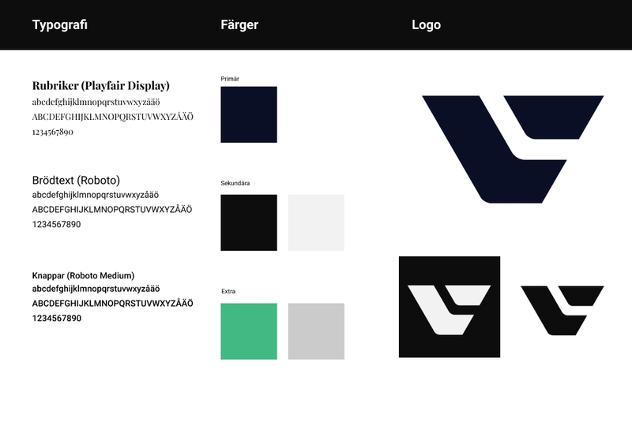
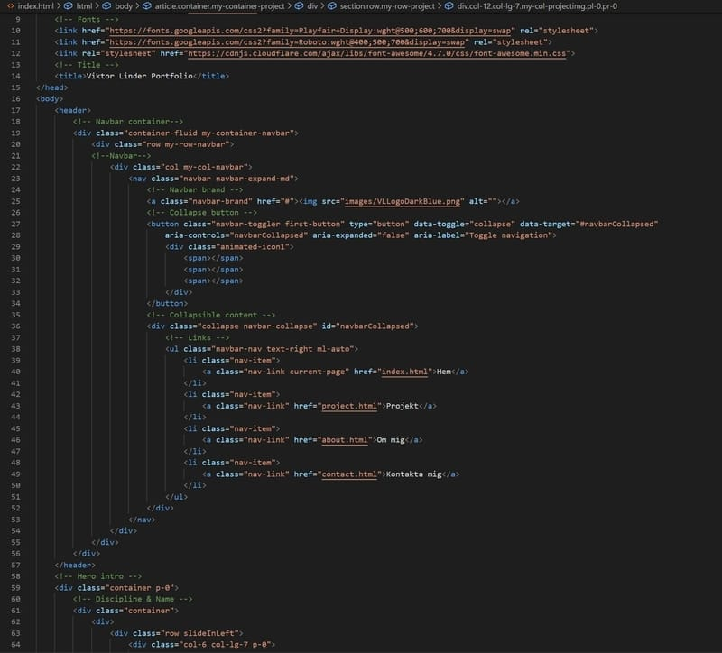

Design av portfolio
Process

Persona
Utifrån desk research sammansattes fynden till en persona, som jag kunde designa för.

Sitemap
För att enklare få en uppfattning om sidans struktur.

Wireframe
Efter skisser, skapade jag en wireframe, för värdering av informations hierarki och placering av element. Jag hade ett mobile first tillvägagångssätt, för att försäkra att webbsidan funkar responsivt.

Grafisk profil
Den grafiska profilen är baserad på mina favorit färger. Typsnitt valdes efter egen preferens, men även för bra läsbarhet på webben.

Hifi prototyp
För att värdera look and feel av hemsidan. Här gjordes ,i samband med den grafiska profilen, iterationer kring färgval men även placering av element.

Kodning
Sedan kodade jag sidan med HTML/Bootstrap,CSS och JS.